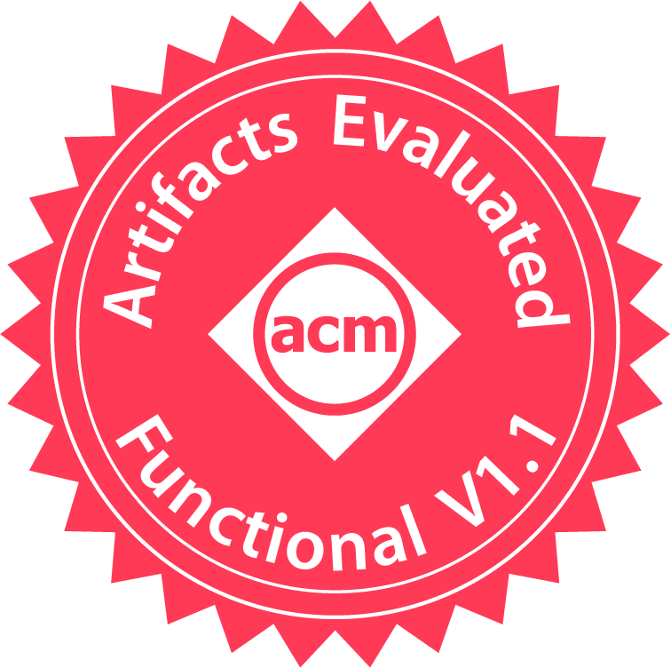
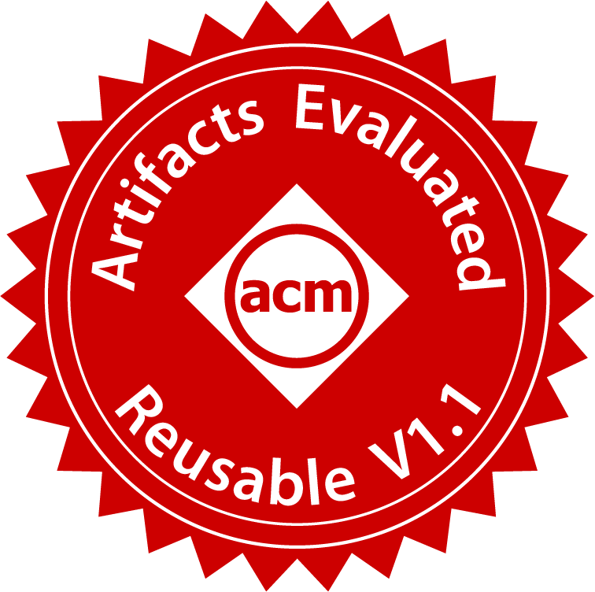
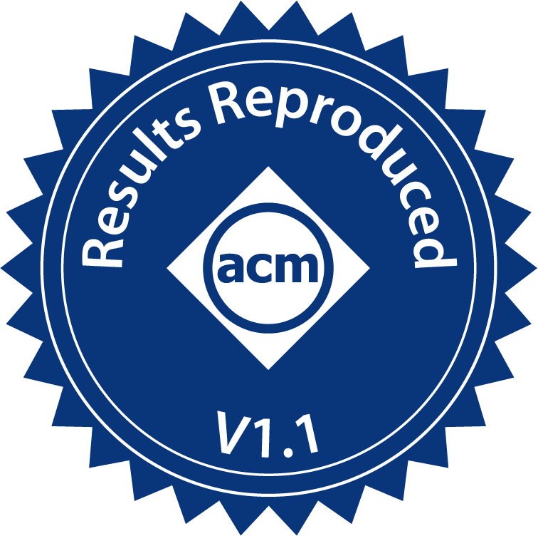
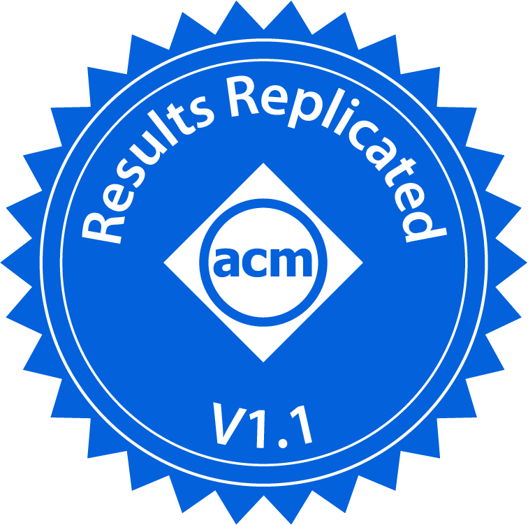

ArtifactsESEC/FSE 2021
FSE 2021 Artifact Track: Call for Submissions
The artifact evaluation track aims to review, promote, share, and catalog the research artifacts of accepted software engineering papers. Authors of an accepted research paper can submit an artifact for the Artifacts Evaluated and Artifacts Available badges. Authors of any prior SE work (published at FSE or elsewhere) are also invited to submit their work for the Results Validated badges. Definitions for the badges are given in the table below, taken from ACM Artifact Review and Badging Version 1.1. The top two artifacts selected by the Program Committee will be awarded the best artifact awards. All accepted abstracts documenting the artifacts will be published in the FSE 2021 proceedings as a further form of recognition.
| Artifacts Evaluated | Artifacts Available | Results Validated | ||
| Functional | Reusable | Results Reproduced | Results Replicated | |
|  |  |  |
 |  |
| The artifacts associated with the research are found to be documented, consistent, complete, exercisable, and include appropriate evidence of verification and validation. | Functional + the artifacts associated with the paper are of a quality that significantly exceeds minimal functionality. They are very carefully documented and well-structured to the extent that reuse and repurposing is facilitated. In particular, norms and standards of the research community for artifacts of this type are strictly followed. | Author-created artifacts relevant to this paper have been placed on a publicly accessible archival repository. A DOI or link to this repository along with a unique identifier for the object is provided. | Τhe main results of the paper have been obtained in a subsequent study by a person or team other than the authors, using, in part, artifacts provided by the author. | Τhe main results of the paper have been independently obtained in a subsequent study by a person or team other than the authors, without the use of author-supplied artifacts. |
Important Dates
- Friday May 21, 2021: FSE 2021 research paper notification
- Friday May 28, 2021: Artifact pre-submission registration deadline
- Friday June 4, 2021: Artifact submission deadline
- Friday July 9, 2021: Artifact notification
All dates are 23:59:59 AoE (UTC-12h).
Badges in More Detail
There are three different badges, two of which distinguish between two levels.
| Artifacts Evaluated: |
This badge is applied to papers whose associated artifacts have
successfully completed an independent audit. Artifacts need not be
made publicly available to be considered for this badge. However, they
do need to be made available to reviewers. Two levels are
distinguished, only one of which should be applied in any instance:
|
| Artifacts Available: | This badge is applied to papers in which associated artifacts have
been made permanently available for retrieval.
|
| Results Validated: | This badge is applied to papers in which the main results of the
paper have been successfully obtained by a person or team other than
the author. Two levels are distinguished, only one of which should be
applied in any instance:
|
Submission Instructions and Reviewing Guidelines
Submission instructions and reviewing guidelines can both be taken from the Submission and Reviewing Guidelines. This document details the submission process, the expected contents of the artifacts as well as the expected criteria to merit awarding the respective badges in the hope to increase the transparency for both authors and reviewers.
It is important that authors submitting to this track carefully read the guidelines prior to their submission. In the following, we briefly summarize key aspects of the submission process. For details, please refer to the provided guidelines.
Submission Overview
In principle, authors are expected to submit through HotCRP their artifact documentation. This documentation distinguishes different basic types of information—captured in one central research abstract (two pages max)—depending on the intended badge.
| Artifacts Evaluated: | The emphasis lies on providing documentation on the artifact previously prepared and archived. Here, the authors need to write and submit documentation explaining how to obtain the artifact package, how to unpack the artifact, how to get started, and how to use the artifact in more detail. The submission must only describe the technicalities of the artifact and uses of the artifact that are not already described in the paper. |
| Artifacts Available: | The authors must give the location of the artifact on a publicly accessible archival repository, along with a DOI or a link to the repository. This means that the HotCRP submission should include the research abstract only providing links to the repositories where the artifact is permanently stored and available. Submitting artifacts themselves through HotCRP without making them publicly accessible (through a repository or an archival service) will not be sufficient. |
| Results Validated: | The emphasis here lies on providing information about how their already published research has been replicated or reproduced as well as links to further material (e.g., the papers and artifacts in question). We encourage submissions for those badges by the replicating authors nominating the original authors. |
| ⚠ | If the authors are not aiming for the Artifacts Available badge, the artifacts do not necessarily have to be publicly accessible for the review process. However, the authors should clearly explain why the artifact are not publicly available, for example, because of privacy concerns, law, or NDAs in place. In this very case, the authors are asked to provide either a private link / password-protected link to a repository or they may submit the artifact directly through HotCRP (in a zip file) and it should become clear which steps are necessary for authors who would like to reuse the artifact. |
Submission Process for Artifacts Evaluated and Artifacts Available
Only authors of research papers accepted to FSE 2021 can submit candidate Artifacts Evaluated and Artifacts Available. Authors must perform the following steps to submit an artifact:
- Preparing the artifact
- Making the artifact publicly available (by using repositories granting public access)
- Documenting the artifact
- Submitting the artifact
1. Preparing the Artifact
There are two options depending on the nature of the artifacts: Installation Package or Simple Package. In general, an Installation Package is related to software artifacts or, for instance, scripts, while a Simple Package may be related to qualitative studies (e.g., interview transcripts or coding schemas).
In both cases, it is expected that the basic set-up of the artifact (including configurations and installations) take less than 30 minutes. Otherwise, the artifact is unlikely to be explicitly endorsed by Program Committee members because they will simply will not have enough time to deal with it.
| Installation Package | If the artifact consists of a tool or software system, then the authors need to prepare an Installation Package so that the tool can be installed and run in the evaluator’s environment. That is to say, please make sure to provide enough associated instructions, code, and data such that any Software Engineering person with a reasonable knowledge of scripting, build tools, etc., could install, build, and run the code. If the artifact contains or requires the use of a special tool or any other non-trivial piece of software, the authors must provide a VirtualBox VM image or a Docker container image with a working environment containing the artifact and all the necessary tools. We expect that the artifacts have been vetted on a clean machine before submission. |
| Simple Package | If the artifact contains documents that can be used with a simple text editor, a PDF viewer, or some other common tool (e.g., a spreadsheet program in its basic configuration) the authors can just save all documents in a single package file (zip or tar.gz). |
2. Making the Artifact Available
The authors need to make the packaged artifact (installation package or simple package) available so that the Program Committee can access it. We suggest a link to a public repository (e.g., GitHub) or to a single archive file in a widely available archive format.
If the authors are aiming for the Artifacts Available badge, the artifact needs to be publicly accessible. In other cases, the artifacts do not necessarily have to be publicly accessible for the review process but the authors must provide a private link or a password-protected link. The authors must use permanent repositories dedicated at data sharing where no registration is necessary for those accessing the artifacts.
3. Documenting the Artifact
Regardless of the badge, authors must provide documentation explaining vhow to obtain the artifact package, how to unpack the artifact, how to get started, and how to use the artifacts in more detail. The artifact itself must only describe the technicalities of the artifact and uses of the artifact that are not already described in the paper; nevertheless, the artifact and its documentation should be self-contained. The submission should contain (and / or link to) the documents listed below. The documents should be in plain text, MarkDown, or PDF format, indicated by the file extension. The name of each file should be in capital letters.
- A README main file describing what the artifact does and where it can be obtained (with hidden links and access password if necessary). Also, there should be a clear description how to repeat, replicate, or reproduce the results presented in the paper. Artifacts that focus on data should, in principle, cover aspects relevant to understand the context, data provenance, ethical and legal statements (as long as relevant), and storage requirements. Artifacts that focus on software should, in principle, cover aspects relevant to how to install and use it (and be accompanied by a small example).
- A REQUIREMENTS file for artifacts that focus on software. This file should, in principle, cover aspects of hardware environment requirements (e.g., performance, storage or non-commodity peripherals) and software environments (\eg Docker, VM, and operating system). Ιf relevant, any additional file with version-specific dependencies information (e.g., requirements.txt for Python-only environments, Cargo.toml for Rust, etc.), should be included according to the norms of the specific language and platform. Any deviation from standard environments needs to be reasonably justified.
- A STATUS file stating what kind of badge(s) the authors are applying for as well as the reasons why the authors believe that the artifact deserves that badge(s).
- A LICENSE file describing the distribution rights. Note that for the \available badge the artifact needs to be under some form of open source license.
- An INSTALL file with installation instructions. These instructions should include notes illustrating a very basic usage example or a method to test the installation. This could be, for instance, on what output to expect that confirms that the code is installed and working; and the code is doing something interesting and useful.
- A copy of the accepted paper in PDF format.
4. Submitting the Artifact
By Friday May 28, 2021 register your artifact at the FSE 2021 HotCRP site by submitting an abstract for the artifact, which should describe the purpose of the artifact. In the supplied form you should also fill in the badge(s) you are claiming, the technology skills assumed by the reviewer evaluating the artifact, and any operating system and environment requirements.
By Friday June 4, 2021 complete your submission by making sure that all the content related to the actual artifact is available.
The Program Committee may contact the authors within the initial review and rebuttal phase to request clarifications on the basic installation and start-up procedures or to resolve simple installation problems. Information on the rebuttal phase are provided in the Submission and Reviewing Guidelines. Instructions will further be sent to the authors (and reviewers) along the reviewing process.
Given the short review time available, the authors are expected to respond within a 48-hour period. Authors may update their artifact after submission only for changes requested by reviewers in the rebuttal phase. Author submitting an open source repository link, are expected to give a tag to time-stamp your submission.
Submission Process for Results Validated
For the Results Replicated and Results Reproduced badges, authors will need to offer appropriate documentation that their artifacts have reached that stage.
By Friday May 28, 2021 register your artifact at the FSE 2021 HotCRP site by submitting an abstract for the artifact, which should describe the purpose of the artifact. In the supplied form you should also fill in the badge(s) you are claiming, the technology skills assumed by the reviewer evaluating the artifact, and any operating system and environment requirements. In particular, the abstract should follow the structure below:
- TITLE: A (Partial)? (Replication|Reproduction) of XYZ . Please add the term partial to your title if only some of the original work could be replicated/reproduced.
- WHO: name the original authors (and paper) and the authors that performed the replication/reproduction. Include contact information and mark one author as the corresponding author.
IMPORTANT: include also a web link to a publicly available URL directory containing (a) the original paper (that is being reproduced) and (b) any subsequent paper(s)/documents/reports that do the reproduction. - WHAT: describe the “thing” being replicated/reproduced.
- WHY: clearly state why that “thing” is interesting/important.
- HOW: say how it was done first.
- WHERE: describe the replication/reproduction. If the replication/reproduction was only partial, then explain what parts could be achieved or had to be missed.
- DISCUSSION (if applicable): What aspects of this “thing” made it easier/harder to replicate/reproduce. What are the lessons learned from this work that would enable more replication/reproduction in the future for other kinds of tasks or other kinds of research.
Two Program Committee members will review each abstract, possibly reaching out to the authors of the abstract or original paper. Abstracts will be ranked as follows:
- If the reviewers do not find sufficient substantive evidence for replication/reproduction, the abstract will be rejected.
- Any abstract that is judged to be unnecessarily critical towards others in the research community will be rejected. Our goal is to foster a positive environment that supports and rewards researchers for conducting replications and reproductions. To that end, it is important to encourage an atmosphere where presentations pay due respect to both work that is being reproduced/replicated and reproductions/replications. Criticism of other work related to the reproduction/replication is acceptable only as part of a balanced and substantive discussion of prior accomplishments.
- The remaining abstracts will be sorted according to (a) how interesting they are to the community and (b) their correctness.
The top ranked abstracts will be invited to give lightning talks.
In case of questions, please do not hesitate contacting the chairs.
Looking forward to welcome you soon!
Questions? Use the ESEC/FSE Artifacts contact form.| Fri 9 Jul 2021 Artifact notification |
| Fri 4 Jun 2021 Artifact submission deadline |
| Fri 28 May 2021 Artifact pre-submission registration |
Panos LouridasCo-chair
Athens University of Economics and Business
Greece
Shane McIntoshCo-chair
McGill University
Canada
Ahmad Abdellatif
Concordia University
Canada
Emad Aghajani
Software Institute, USI Università della Svizzera italiana
Switzerland
Daniel Alencar Da Costa
University of Otago
New Zealand
Higor Amario de Souza
National Commercial Apprenticeship Service - SENAC
Brazil
Le An
Polytechnique Montreal
Canada
Muhammad Asaduzzaman
Lakehead University, CA
Canada
Dionysis Athanasopoulos
Queen's University Belfast
United Kingdom
Bilyaminu Auwal Romo
University of East London
United Kingdom
Önder Babur
Eindhoven University of Technology
Subarno Banerjee
University of Michigan
United States
Rodrigo Bonifácio
University of Brasília
Brazil
Joanna C. S. Santos
University of Notre Dame
United States
Bruno Cafeo
Federal University of Mato Grosso do Sul (UFMS)
Brazil
Bodin Chinthanet
Nara Institute of Science and Technology
Japan
James C. Davis
Purdue University, USA
United States
Xavier Devroey
University of Namur
Belgium
Daniele Di Pompeo
University of L'Aquila
Italy
Felipe Ebert
Eindhoven University of Technology
Netherlands
Camilo Escobar-Velásquez
Universidad de los Andes
Colombia
Cuiyun Gao
Harbin Institute of Technology
China
Sepideh Ghanavati
University of Maine
United States
Francisco Gomes de Oliveira Neto
Chalmers University of Technology, Sweden / University of Gothenburg, Sweden
Sweden
Latifa Guerrouj
École de Technologie Supérieure
Canada
Shinpei Hayashi
Tokyo Institute of Technology
Japan
Joseph Hejderup
Delft University of Technology
Netherlands
Vincent J. Hellendoorn
Carnegie Mellon University
United States
Fehmi Jaafar
The Computer Research Research Institute of Montreal
Canada
Ajay Jha
University of Alberta
Canada
Ayaan M. Kazerouni
California Polytechnic State University, San Luis Obispo
United States
Maria Kechagia
University College London
United Kingdom
Hourieh Khalajzadeh
Monash University, Australia
Raffi Khatchadourian
CUNY Hunter College
United States
.jpg)
Djamel Eddine Khelladi
CNRS, France
France
Rahul Krishna
IBM Research
United States
Maxime Lamothe
Polytechnique Montréal
Canada
Heng Li
Polytechnique Montréal
Canada
Ivan Machado
Federal University of Bahia
Brazil
George Mathew
North Carolina State University
United States
Jean Melo
IT University of Copenhagen / Dixa
Samim Mirhosseini
North Carolina State University
Kevin Moran
George Mason University
.jpg)
Daye Nam
Carnegie Mellon University
United States
Sebastian Nielebock
Otto-von-Guericke University Magdeburg
Germany
John-Paul Ore
North Carolina State University
United States
Candy Pang
MacEwan University
Canada
Ivan Pashchenko
University of Trento
Italy
Masud Rahman
Dalhousie University
Canada
Md Tajmilur Rahman
Gannon University
United States
Aurora Ramírez
University of Córdoba
Spain
Gema Rodríguez-Pérez
University of Waterloo
Canada
Fatima Sabir
Concordia Universtiy
Canada
Anand Ashok Sawant
University of California, Davis
Mojtaba Shahin
Monash University
Ştefan Stănciulescu
Hitachi ABB Power Grids Research
Switzerland
Matúš Sulír
Technical University of Košice
Slovakia
Yutian Tang
ShanghaiTech University
China
Saurabh Tiwari
DAIICT Gandhinagar
India
James Walden
Northern Kentucky University
United States
Bartosz Walter
Poznań University of Technology, Poland
Poland
Zhiyuan Wan
Zhejiang University
Dong Wang
Nara Institute of Science and Technology
Tingting Yu
University of Cincinnati
United States
Tianyi Zhang
Harvard University, USA
United States